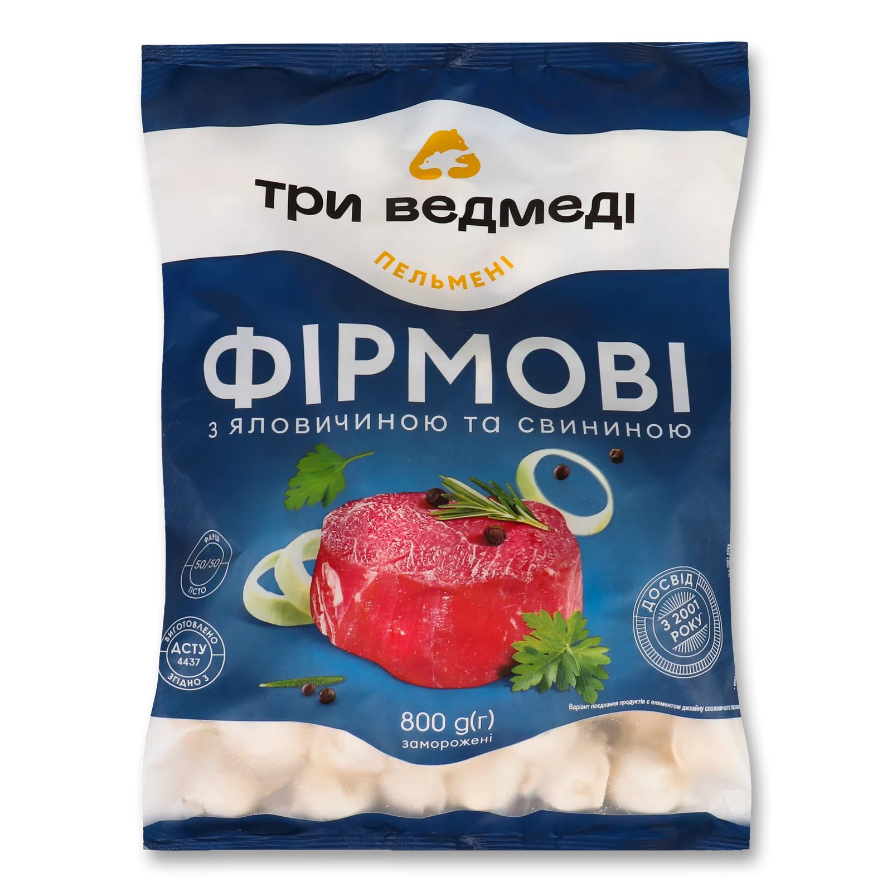

Передмова
Варіння пельменів — це не складно, якщо знати кілька простих порад. Нижче ми детально розкажемо про інгредієнти та покроковий процес приготування.

Інгредієнти
- Заморожені пельмені з магазину 
- Вода
- Сіль
- Перець
- Сметана
Спосіб приготування
- Наберіть в кастрюлю воду. Кількість води залежить від бажаної кількості споживаних пельменів.
- Накрийте кастрюлю кришкою та поставте на плиту. Увімкніть плиту, та на комфортці з каструлею виставіть максимальну температуру вогню.
- Дочекайтеся кипіння води. Як тільки вода закипіла - зніміть кришку і закиньте необхідну кількісьт солі (однієї столової ложки вистачить, коригуйте за власними відчуттями).
- Після додавання солі - закиньте пельмені у киплячу воду.
- ОБЕРЕЖНО - при закиданні пельменів у воду на вас може потрапити окріп. Не робіть різких рухів і закидайте пельмені акуратно. Можливо варто прикритись кришкою кастрюлі. Ми серйозно.
- Потримайте пельмені у воді, допоки вони не спливуть на поверхню (5-7хв) і потім, зменшивши вогонь до половини, потримайте їх ще 2 хв.
- Вимкніть плиту, дістаньте пельмені ложкою-ситом, або просто злийте воду з кастрюлі і дістаньте пельмені звичайною ложкою. Викладіть на тарілку.
- Посипте перцем (не перестарайтесь з цим) і додайте сметану в тарілку.
Смачного! А якщо захочете з кимось розділити цей прекрасний обід - не забудьте збільшити кількість усіх інгредієнтів (і за бажання - тарілок) удвічі.